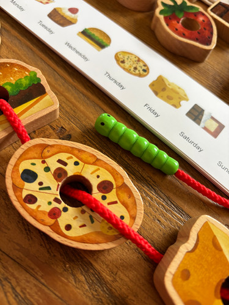
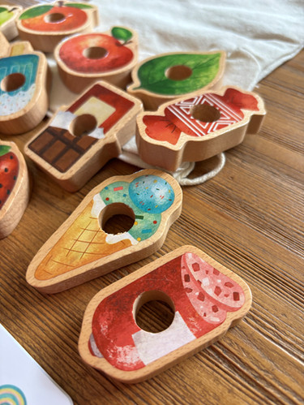
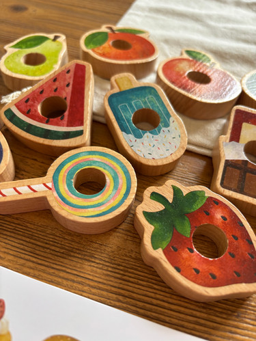
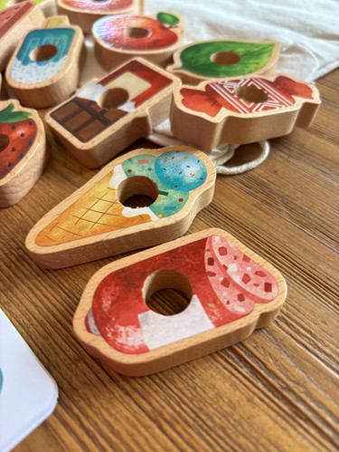

Available
Wooden caterpillar threading
Product number: KC009 221
R490Get little fingers moving with this beautiful wooden food and caterpillar threading activity. With 18 solid and durable wooden food pieces, a caterpillar threader and various sequencing cards to copy (or create your own sequence), this game will be used for hours. Stimulating fine motor skills, planning, sequencing and and language, this is a must have!
Enquire about this product




Wooden caterpillar threading at Kids Corner KZN
Wooden caterpillar threading is part of our Learning Tools collection. Kids Corner KZN stocks toys for learning, pretend play, creative play, gifting and everyday childhood discovery in South Africa.
Browse more Learning Tools toys